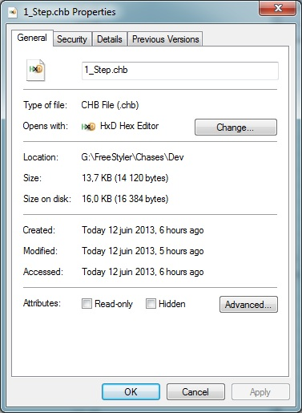
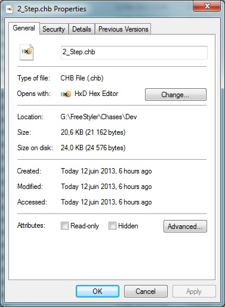
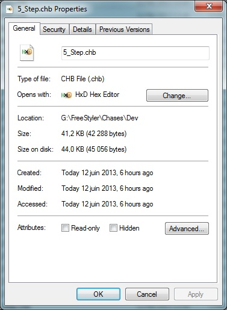
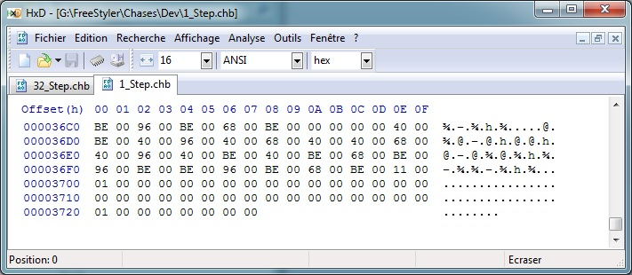
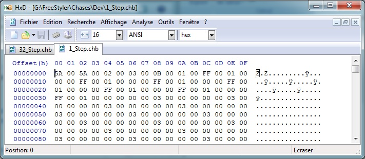
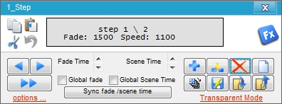
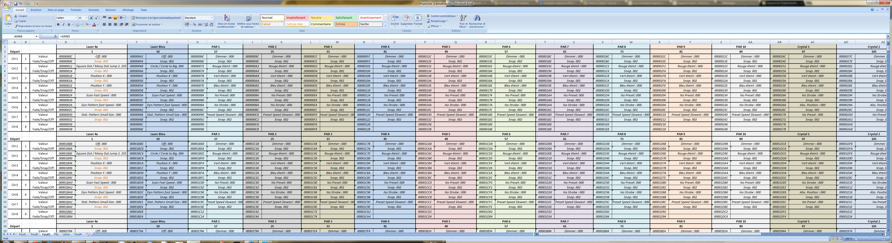

Table of Contents
Sequences Understanding
IMPORTANT NOTE
This article assumes you're running FreeStyler on a PC using a little endian processor (x86 core) You may have to consider swapping the data on a big endian processor (need cross check)
What is a sequence file (*.chb)
The sequence file is generated by the sequence editor. See the sequence editor for further information. This file contains the DMX values and other informations to allow Freestyler to play back your scenes.
Structure of the sequence file
The sequence file is divided as below:
Word0: Number of steps contained in the file
0x0200: Sequence has 2 steps
Then all steps are added with the following syntax:
all steps are using 1618 words (1 + 1 + 1536 + 79)
Word1: Time for the fade (multiplier for 500ms)
0x0100: (fade time is 500 ms) 0x0300: (fade time is 1500 ms)
Word2: Time for the scene (multiplier for 100 ms)
0x0A00: (scene time is 1000 ms) 0x0D00: (scene time is 1300 ms)
Word3 to Word1539 (included): 3 words per DMX channel where
- First word is the DMX value for the channel
From 0x0000 to 0xFF00 (0x0100, 0x0200, …, 0x7F00, 0x8000, …, 0xFE00, 0xFF00)
- Second word is the usage of the DMX channel
0x0100 = Fade 0x0200 = Snap 0x0300 = OFF
- Third word seems to be unused for now
Always 0x0000
Word1540 to Word1617 (included): Behavior not understood. Values are not changing whether cues or buttons are used. I have today no clues for that.
How can I see/edit the sequence file content
Get an Hex editor such as PSPad for example and open the file in HEX format.
{kind=link}
In this example, the sequence has 5 steps. 0x0500
In step1
- Fade time is 500ms 0x0100
- Scene time is 1000ms 0x0A00
- Channel1 is 255 snap 0xFF00 0x0200 0x0000
- Channel2 is 255 fade 0xFF00 0x0100 0x0000
- Channel3 is 255 fade 0xFF00 0x0100 0x0000
- Channel4 is 255 snap 0xFF00 0x0200 0x0000
- Channel5 is 255 fade 0xFF00 0x0100 0x0000
- Channel6 is 255 snap 0xFF00 0x0200 0x0000
- Channel7 is 255 fade 0xFF00 0x0100 0x0000
- Channel8 is 255 snap 0xFF00 0x0200 0x0000
- Channel9 and follow are unused
I use FreeStyler Version 3.5.2. After having analyzed the Sequence file, the format has slighty changed. Below is the new detailed format.
First, I run Windows 7 64 bits Enterprise, it might be important to notice. I do not have time to crosscheck with other platform right now, but I would be surprised wether the format was platform dependant. So it will be likely the same format for other versions of Windows.
So here it is.
The size of a Sequence File vary depending on the number of sequences recorded in it. Here we must distinguish between the real size of the file, and the size occupied on the disk (right click on the file in an explorer, and click on details, you will see the two values). I consider only the real size of the file, not the space occupied on the disk To make sure, you can download an Hex Editor and open your file, it will display the data regarding the real file size.
There is an important thing to notice here, when you record/save a sequence file, FreeStyler store an additional step tou yours; Thus, if you record a sequence with only one step, actually you clicked only onece on the “snapshot” button, FreeStyler store a file with two steps. I don't know why, but trying to make my own sequence files, I had to consider this, and it seems impossible to store a file with only one step. So be advised about that.
The size of a Sequence File, in Octets and in Decimal is calculated like this:
Thus, for a Sequence File containg one single step, we have: 14120 + ((1 - 1) * 7042 ) = 14120 + (0 * 7042) = 14120
2nd example, for a Sequence File containing 2 Steps, we calculate: 14120 + ((2 - 1) * 7042 ) = 14120 + (1 * 7042 ) = 21162
Last example, for a Sequence File containing 5 Steps, we calculate: 14120 + ((5 - 1) * 7042 ) = 14120 + (4 * 7042 ) = 14120 + 28168 = 42288
To confirm, here are 3 file details, 1, 2 and 5 steps Sequence Files:
  
Let's have a look at the Sequence File containing only one Step with an Hex Editor: 
The end of file is at address (hexadecimal) $3727, which makes in decimal 14119. Thus we have position zero to 14119, bingo we have our 14120 octets.
Now, how is a Sequence File organized inside ?
So, let's go ahead. Another screenshot with the Hex Editor, at the begining of the Sequence File containing only ONE Step:

Values “5A 00 5A 00” are always the same, so let's say it is a constant defining a “Sequence File” format.
Addresses $00000004-5 we have value 0200. Remember, this makes “0002”. This is the “Number of STEPS” contained in this Sequence File. Thus we have 2 Steps in this file… what ? I recorded only ONE Step !
This is why, when we load the Sequence Editor from this Sequence File, we can see Step 1/2. FreeStyler “prepare” the next step, and keep in mind the preceding recorded values, allowing you to add another Step, changing only the new values, and keeping the scene status as it was previously (this might be confusing, just remember that FreeStyler records an additional Step with the last values recorded).
Addresses $00000006-7 we have “0300”, giving 0003. This is the “Fade Time” in units of 500 milliseconds, it makes 1500 millisecond, thus Fading Time is 1 second and half for this Step.
Addresses $00000008-9 we have value “0B00”, giving 000B in hexadecimal, giving 11 in decimal. This is for the Speed of the Step, in units of 100 milliseconds. 11 times 100 give 1100, thus the Speed for this Step will be 1100 milliseconds. The picture below confirm this:
From now onward, we will have 3 Words (6 octets) per DMX channel, starting by Channel 1.
So, we can find up to 511 groups of 3 words, one group per DMX Channel:
First Word =⇒ Not Significant, maybe reserved for future use.
Second Word =⇒ The Value that will be sent to this channel.
Third Word =⇒ One value among 3 possibilities for this DMX channel:
- 0100 for Fade
- 0200 for Snap
- 0300 for Off.
And so on, the following Word is the first Word for the next DMX Channel.
After all the 511 Channels have been passed, we find a bunch of Data. I do not know what is it intended to, but this will not change.
To make it short, for a Sequence File containing One Step, the format from the beginning of the file is:
- 2 Words containing the data “5A005A00”. Constant.
- 2 Words containing the number of Steps + 1 (0200 in our example).
- 2 Words containing the number of 500 millisecond units for Fade Time, 0300 in the example.
- 2 Words containing the number of 100 millisecond units for the Scenne Speed, 0B00 in our example.
- 511 groups of 3 Words, one group per Channel. The first one (address 0000000A) is “01 00 FF 00 01 00”
- A bunch of data, with unknown signification, which content does not vary providing we do not add Steps (we do not modify the file size). I mean, providing you create a file with, for instance, 3 steps, you can modify any value, DMX and/or Fade/Snap/Off mode, within the 3 Steps (Actually 4 with the additional Step ceated by FreeStyler). Your modifications will be successfuly understood by FreeStyler when it loads your new Sequence File.
In the screenshot above, for DMX Channel 1, we send the value 255 (FF00 gives 00FF), and the following value “01 00” says that it will be sent in “Fade Mode”.
Next DMX Channel, number 2, is (address 00000010) 00 00 FF 00 01 00:
firsts 00 00 is unused (the same for all the channels).
FF 00 means we sent the value 255 (FF) to the Channel 2.
01 00 means we are in fade mode.
To be continued, we will see the organization for the Sequence Files containing mode than 1 Step.
What is interesting in a Sequence File?
First, given a Step Number, locate the address of the information (one octet) for:
- The Fading Time
- The Step Duration
Second, given a Step Number and a Channel number, find the address of the information (one octet) for:
- The value to send toward this channel (one Octet, 00 to FF, standing for zero to 255).
- The Status of this Channel (Fade, Snap, Off)
That's it, it should be enough for those who want to patch their Sequence files.
This is what I did: for example I knew that I wanted to make a sequence file with 14 steps (you can make more or less, up to you). So I called the Sequence Creator, with the “Window” menu from FreeStyler, item “Create Sequence”. Then, I put all my channels to “Off”“ or zero, and pushed 13 times on the little blue cross button, “Add Step/Scene”.
So, as I wanted to manage 14 Steps, I created a dummy 13 Steps Sequence File and recorded it. From now, I could patch this file with my 14 steps. And it works, it does work.
Hera are the formulas to retrieve the needed information.
To store the Fading Time for a given Step:
This is in decimal. Steps are from 1 to the FreeStyler limit There are some topics on this subject, if you want more steps, just update the .ini file.
Let's take an example, you want to set the value for the fading time of your 3rd Step:
- 6 + ((3 - 1) * 7036) = 6 + (2 * 7036) = 6 + 14072 = 14078
- Convert in hexadecimal, 14078 = 36FE
So, with an hex editor, or a program of your own, patch one octet at your file address 36FE to set the fading time of your 3rd step. remember, the value you store here is in units of 500 milliseconds, so if you want a fading time of 2 seconds and half, you must store “05”.
Now the Step Duration Time for a given step:
As an exemple, the duration time for your 4th Step will be an octet, from 00 to FF, at your File Address: 8 + ((4 - 1) * 7036) = 21116 in decimal, giving 527C in hexadecimal. Here you store in units of 100 milliseconds.
Now, the value (one octet, 00 to FF) for a given DMX Channel within a given Step:
Ok, let's go for an example. You want to store a DMX value for DMX Channel number 3 of your 5th Step:
- 12 + ((3 - 1) * 6) + ((5 - 1) * 7036) = 12 + (2 * 6) + (4 * 7036) = 12 + 12 + 28144 = 28168
- Convert 28168 in hexadecimal, giving 6E08
- so the DMX value from Channel 3 within Step 5 is located in your Sequence File at address 6E08.
Now, the status of the Channel, regarding FreeeStyler coding, it can takes either Fade, or Snap, or Off, respectiively 01, 02 or 03.
To patch this value, apply the below formula:
A last example, you want to patch the status of DMX Channel number 5 of your 4th Step, and set it to “Snap”:
- 14 + ((5 - 1) * 6) + ((4 - 1) * 7036) = 21146, converted in hexa: 529A.
- You just have to store “02” (stands for Snap) at your file address 529A.
For my needs, I made a big Excel sheet with the above formulas, this is comfortable as I can see all my scenes at a glance, and modify very easily. I export in a text file the addresses and their values. I read this text file with a program I wrote in C++ visual studio and patch my Sequence File. One could write such a program in any language. Here is a snapshot of my Excel sheet, it can give ideas to someone: 
{kind=link}
To complete, be warned, this works with FreeStyler 3.5.2. However, the format might change in future versions, and all the above formulas would be obsolete.